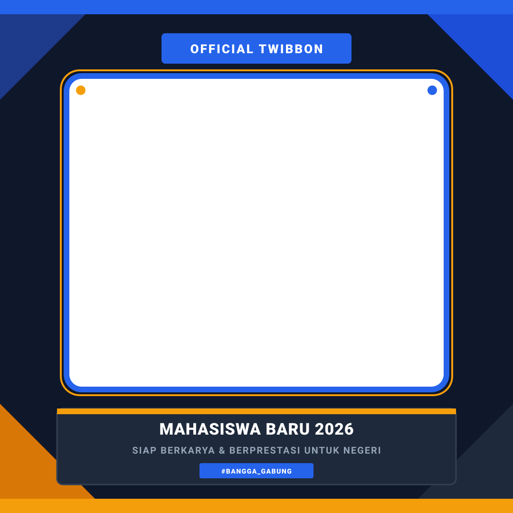

Upload Foto Mahasiswa Baru
Pilih foto terbaikmu. Kamu bisa menggeser, memperbesar, dan mengatur posisi agar pas dengan frame twibbon.
Mendukung format: JPG, PNG, WEBP (Maksimal 15MB)
Atur & Paskan Foto
Geser atau zoom foto agar pas di dalam frame

👆 Sentuh / Drag foto untuk menggeser. Gunakan Slider atau cubit layar untuk zoom.
Zoom
100%
Preview Hasil Video Twibbon
Video intro akan diputar dulu, lalu dilanjutkan tampilan twibbon fotomu
0.0s / 0.0s
1080 x 1080 (HD)